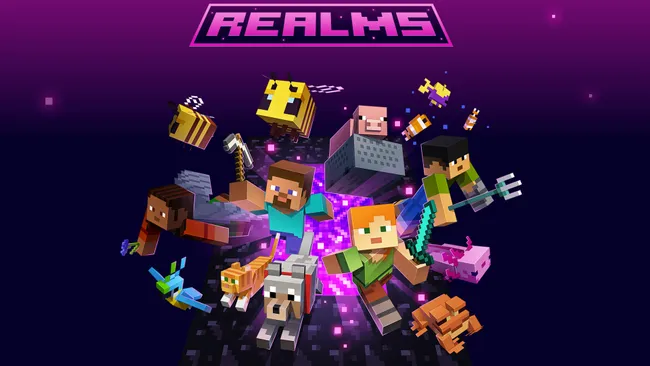

Minecraft Realms
Minecraft’ta Minecraft Realms, oyuncuların kolayca kendi özel sunucularını oluşturmasını sağlayan resmi bir hizmettir. Bu sistem sayesinde oyuncular arkadaşlarını davet ederek aynı dünyada birlikte oynayabilir. Realms sunucuları Mojang Studios tarafından barındırılır, bu yüzden oyuncuların ayrı bir sunucu kurmasına veya teknik ayar yapmasına gerek kalmaz. Sunucu 7/24 açık kalabilir ve davet edilen oyuncular istedikleri zaman dünyaya katılabilir. 🎮
Minecraft Modları
Minecraft’ta modlar (mods), oyuna yeni özellikler ekleyen veya mevcut özellikleri değiştiren oyuncu yapımı eklentilerdir. Modlar sayesinde oyuna yeni bloklar, eşyalar, yaratıklar, biyomlar, makineler veya tamamen yeni oyun mekanikleri eklenebilir. Modlar genellikle oyuncular tarafından geliştirilir ve oyuna daha fazla çeşitlilik ve farklı oynanış deneyimleri kazandırır. Birçok mod, oyuna yüklenebilmek için Minecraft Forge veya Fabric gibi mod yükleyiciler gerektirir.
Minecraft Sunucuları
Minecraft’ta sunucular (servers), birçok oyuncunun aynı dünyada internet üzerinden birlikte oynayabildiği çok oyunculu oyun ortamlarıdır. Sunucular oyunculara mini oyunlar, rol yapma (RPG), hayatta kalma dünyaları ve özel oyun modları gibi farklı deneyimler sunabilir.
Sunucular oyuncular tarafından kurulabilir veya özel şirketler tarafından barındırılabilir. Oyuncular bir sunucuya IP adresi ile bağlanarak diğer oyuncularla birlikte oyun oynayabilir ve topluluk oluşturabilir. 🌍🎮
Minecraft Biyomları
Minecraft’ta biyomlar, oyundaki dünyanın farklı doğa bölgelerini ifade eder. Her biyomun kendine özgü iklimi, bitkileri, hayvanları ve yer şekilleri bulunur. Bu biyomlar sayesinde oyun dünyası daha çeşitli ve keşfedilebilir hale gelir.